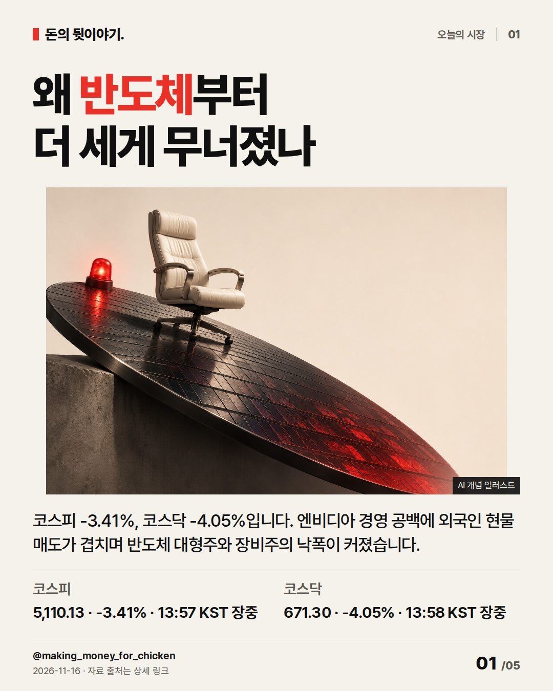
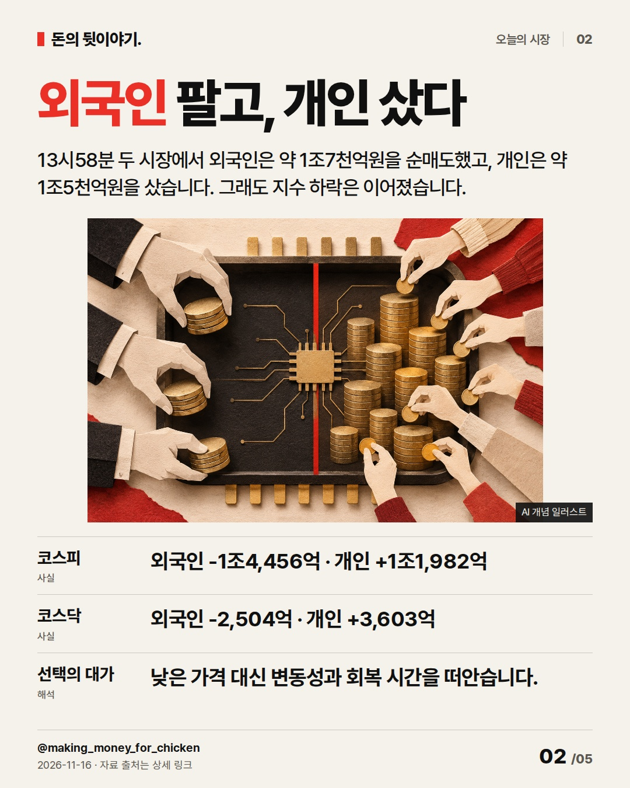
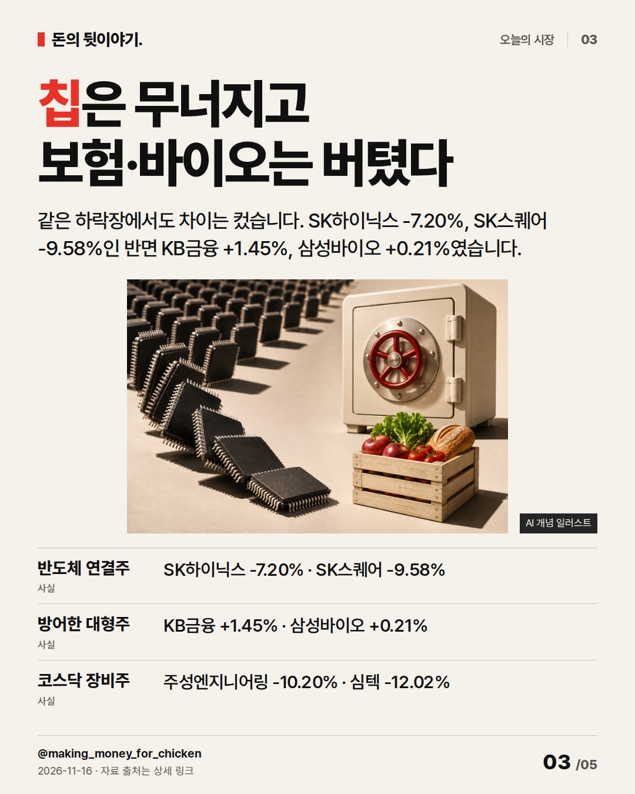
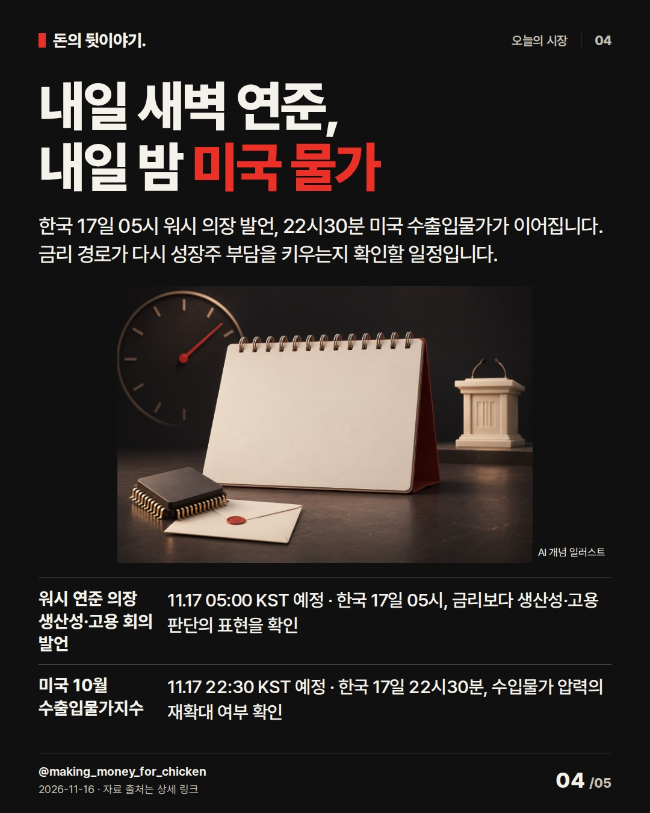
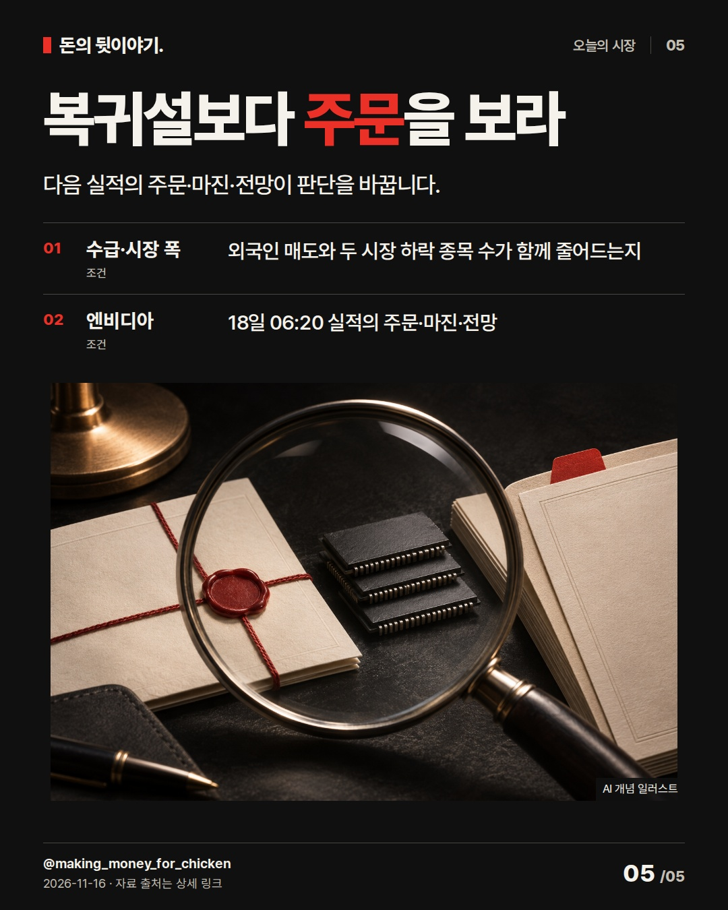

왜 반도체부터
더 세게 무너졌나
한국 증시의 급락은 엔비디아 이름 하나보다 외국인 현물 매도와 반도체 집중에서 더 선명했습니다. 개인이 받은 물량이 버티는지는 다음 수급과 엔비디아의 고객·실적 설명으로 확인해야 합니다. #코스피 #반도체 #시장수급
왜 반도체부터
더 세게 무너졌나

코스피 -3.41%, 코스닥 -4.05%입니다. 엔비디아 경영 공백에 외국인 현물 매도가 겹치며 반도체 대형주와 장비주의 낙폭이 커졌습니다.
- 코스피: 5,110.13 · -3.41% · 13:57 KST 장중
- 코스닥: 671.30 · -4.05% · 13:58 KST 장중
AI 생성 개념 일러스트 · 실제 현장이나 공식 제품 사진이 아닙니다.외국인 팔고, 개인 샀다

13시58분 두 시장에서 외국인은 약 1조7천억원을 순매도했고, 개인은 약 1조5천억원을 샀습니다. 그래도 지수 하락은 이어졌습니다.
- 코스피: 외국인 -1조4,456억 · 개인 +1조1,982억
- 코스닥: 외국인 -2,504억 · 개인 +3,603억
- 선택의 대가: 낮은 가격 대신 변동성과 회복 시간을 떠안습니다.
AI 생성 개념 일러스트 · 실제 현장이나 공식 제품 사진이 아닙니다.칩은 무너지고
보험·바이오는 버텼다

같은 하락장에서도 차이는 컸습니다. SK하이닉스 -7.20%, SK스퀘어 -9.58%인 반면 KB금융 +1.45%, 삼성바이오 +0.21%였습니다.
- 반도체 연결주: SK하이닉스 -7.20% · SK스퀘어 -9.58%
- 방어한 대형주: KB금융 +1.45% · 삼성바이오 +0.21%
- 코스닥 장비주: 주성엔지니어링 -10.20% · 심텍 -12.02%
AI 생성 개념 일러스트 · 실제 현장이나 공식 제품 사진이 아닙니다.내일 새벽 연준,
내일 밤 미국 물가

한국 17일 05시 워시 의장 발언, 22시30분 미국 수출입물가가 이어집니다. 금리 경로가 다시 성장주 부담을 키우는지 확인할 일정입니다.
- 워시 연준 의장 생산성·고용 회의 발언: 11.17 05:00 KST 예정 · 한국 17일 05시, 금리보다 생산성·고용 판단의 표현을 확인
- 미국 10월 수출입물가지수: 11.17 22:30 KST 예정 · 한국 17일 22시30분, 수입물가 압력의 재확대 여부 확인
AI 생성 개념 일러스트 · 실제 현장이나 공식 제품 사진이 아닙니다.복귀설보다 주문을 보라

다음 실적의 주문·마진·전망이 판단을 바꿉니다.
- 수급·시장 폭: 외국인 매도와 두 시장 하락 종목 수가 함께 줄어드는지
- 엔비디아: 18일 06:20 실적의 주문·마진·전망
AI 생성 개념 일러스트 · 실제 현장이나 공식 제품 사진이 아닙니다.자료 출처
- 네이버 금융 · 코스피 실시간 지수 · 2026-11-16 13:57 KST; 5,110.13, 전일 5,290.53 대비 -3.41% · 조회 2026-11-16T14:04:30+09:00
- 네이버 금융 · 코스닥 실시간 지수 · 2026-11-16 13:58 KST; 671.30, 전일 699.66 대비 -4.05% · 조회 2026-11-16T14:04:30+09:00
- 네이버 금융 · 코스피 장중 수급·시장 폭 · 2026-11-16 13:58 KST; 외국인 -1조4,456억, 개인 +1조1,982억, 하락 649 · 조회 2026-11-16T14:04:30+09:00
- 네이버 금융 · 코스닥 장중 수급·시장 폭 · 2026-11-16 13:58 KST; 외국인 -2,504억, 개인 +3,603억, 하락 1,406 · 조회 2026-11-16T14:04:30+09:00
- 연합뉴스 · 코스피·코스닥 낙폭 확대와 외국인 매도 · 2026-11-16 10:56 KST; 반도체 투자심리와 업종별 장중 흐름 · 조회 2026-11-16T14:04:30+09:00
- NVIDIA · CEO Transition · 2026-11-12; 황 CEO 사임, 크레스 임시 CEO, 영업·로드맵 지속 방침 · 조회 2026-11-16T14:04:30+09:00
- NVIDIA · FY2027 3분기 실적 발표 일정 · 2026-11-17 13:20 PT 실적, 14:00 PT 콜 예정 · 조회 2026-11-16T14:04:30+09:00
- Federal Reserve · 2026년 11월 일정 · 2026-11-16 12:00 PT 워시 의장 생산성·고용 회의 발언 · 조회 2026-11-16T14:04:30+09:00
- 미국 노동통계국 · 2026년 11월 발표 일정 · 2026-11-17 08:30 ET 10월 수출입물가지수 발표 예정 · 조회 2026-11-16T14:04:30+09:00
- 불스토리 · 앤트로픽 IPO와 반도체주 실제 5장 카드 (편집 참고) · 10/29 카드 5장·캡션 직접 열람; 질문→규모→이익 한계→반도체 경로 · 조회 2026-11-16T14:04:30+09:00
- 홍춘욱 · 반도체 주문 감소 조건 공개 재현본 (편집 참고) · 11월 공개 재현본의 원문 인용·앞뒤 맥락 열람; 영상 전체 미열람 · 조회 2026-11-16T14:04:30+09:00
- Morning Brew · Nvidia has a big leather jacket to fill (편집 참고) · 2026-11-13 공개 기사 전체; CEO 공백→고객·자금 경로 설명 확인 · 조회 2026-11-16T14:04:30+09:00
- CNBC Morning Squawk · Nvidia leadership uncertainty (편집 참고) · 2026-11-12 공개 뉴스레터 전체; 시장→경영 변화→업종 차이 배치 확인 · 조회 2026-11-16T14:04:30+09:00
편집 기록
{
"improvement": "최근 5편의 원고·실제 카드·review는 숫자 대비가 선명했지만 3장 이후 결론을 되풀이했습니다. 이번에는 한 질문에 외국인→개인→업종→다음 검증 순으로 새 근거를 붙였습니다.",
"reason": "불스토리 10/29 실제 카드 5장·캡션은 질문→조달 규모→이익 한계→반도체 경로를 확인했습니다. 홍춘욱 공개 재현본은 2~3년 뒤 주문 조건의 원문·맥락만 읽었고 영상 전체는 미열람. Morning Brew 기사·CNBC 뉴스레터 전체도 비교했습니다.",
"application": "초안 ‘엔비디아 충격에 한국 증시 급락’→퇴고 ‘왜 반도체부터 더 세게 무너졌나’. 2장에 돈을 파는 외국인과 받는 개인의 대가, 3장에 같은 시각 대형주 비교를 넣고 중국 지표를 하락 원인에서 뺐습니다.",
"avoided_repetition": "표지 등락률을 뒤에서 반복하지 않고, 4장은 금리 일정, 5장은 고객 주문·마진·전망으로 판단 조건을 바꿨습니다. 복귀 확정·AI 수요 붕괴·중국 지표가 한국장을 끌어내렸다는 미확인 결론은 폐기했습니다. 반응 지표 미확보."
}투자 참고용 · 매수·매도 권유 아님.